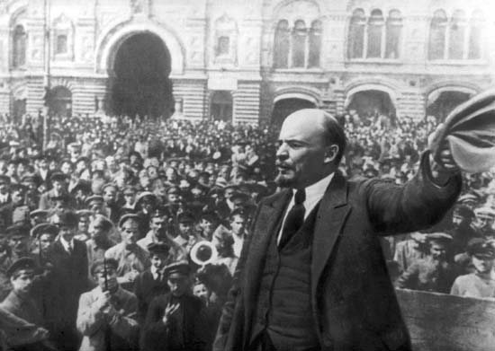

IF YOU CAN SEE THIS TEXT, YOU NEED TO ENABLE JAVASCRIPT FOR MANY FUNCTIONS OF THIS SITE
The Russians were collapsing by the end of 1917. The war was putting weariness and stress on the country, and many were starting to oppose the regime in charge. Nicholas II, was losing popularity and was losing the power he once had over his country. Many Russians wanted a more democratic nation, while another group wanted a more socialist country. The wave of communism would start in Russia, due to the ideology already spreading across Europe, but also the return of Vladimir Lenin. Some theories support that the German government sent Lenin back to Russia, in the attempts to cause revolt and destabilize Russia. The first revolution to occur was the February Revolution which due to different calendars actually occurred in March. The revolution would have success due to the lack of a military to defend the government. Nicholas was removed from power and until November, the Russian government was in a dual power of a provisional government and a socialist national movement.
The second revolution would be a lot more violent, and would be called the Bolshevik/October Revolution. the Bolshevik socialist group would overthrow the provisional government,and squash those who opposed. To make their socialist state a success, the Bolshevik Russia would have to withdraw from WWI. On December 15, 1917, an armistice was signed, and a peace treaty, The Treaty of Brest-Litovsk. Russia would lose various amounts of territory in this treaty, including the baltics, Ukraine and Poland. The Russians would enter a civil war after this where the Bolshevik’s fought opposition. This war would last until 1922, where the USSR would be founded. This civil war was very bloody and over 5,000,000 Russians would die.